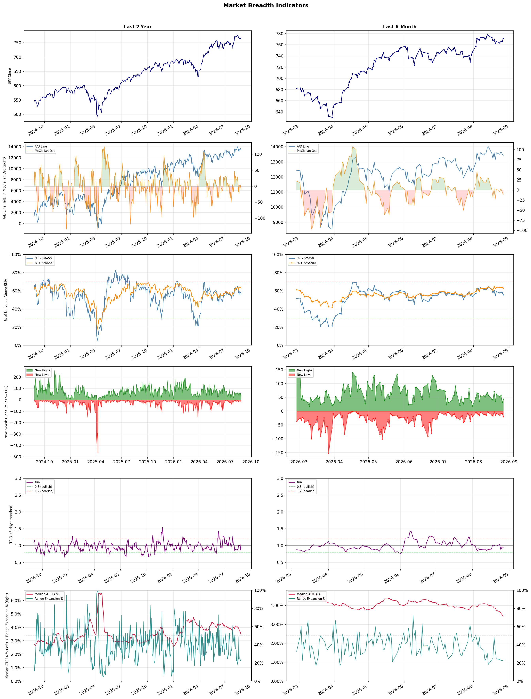

A daily market breadth and sector rotation report for active investors
| Item | Read |
|---|---|
| Regime | Selective Risk-On |
| Risk posture | Selective |
| Universe | 1,331 stocks tracked · 44 new 52-week highs · 30 active swing setups |
| Breadth | 55.7% of tracked stocks are above SMA50 — neutral range, new highs exceed new lows (44 vs 20), McClellan oscillator (breadth momentum) is negative at -10.9 |
| Leadership | Diagnostics & Research, Health Information Services, and Gold |
| Weakest groups | Footwear & Accessories, Solar, and Chemicals |
Use this report to prioritize research and chart review; validate entries, stops, liquidity, earnings, and risk before acting.
| Item | Read |
|---|---|
| Primary read | Selective Risk-On regime with Selective risk posture. |
| Research queue | TWST, NEO, WGS, NTRA, PSNL |
| Leadership focus | Diagnostics & Research, Health Information Services, and Gold |
| Caution list | Footwear & Accessories, Solar, and Chemicals |
| Review prompt | Check extension risk, chart location, fundamentals, valuation, and earnings before using any research row. |
| Item | Read |
|---|---|
| Primary read | 2 active risk warnings; use screen output as watchlist input only. |
| Bullish screens | NEO, NTRA, RVTY, HNGE, TECH |
| Bearish screens | IQ, TJX, QFIN, HDB, MCD |
| Alerts / levels | Automated trigger, stop, ATR, liquidity, reward/risk, and event-risk levels are pending future enrichment. |
| Review prompt | Open the linked chart, define trigger and invalidation, then check liquidity and event risk independently. |
Risk Posture: Selective — screen backdrop supports selective research in leading industries
Metric context: McClellan below -50 = elevated selling pressure; below -100 = washout territory. Range Expansion = share of stocks with daily range above their 20-day average. Signal Density = share of tracked names appearing in signal screens.
| Breadth Date | % > SMA50 | % > SMA200 | New Highs | New Lows | McClellan | Median Range | Avg Range | Median ATR14 | Range Expansion | Signal Density |
|---|---|---|---|---|---|---|---|---|---|---|
| 2026-08-27 | 55.7% | 62.9% | 44 | 20 | -10.9 | 2.7% | 3.2% | 3.4% | 23.1% | 7.3% |

Prior comparison date: August 26, 2026
| Metric | Prior | Current | Change |
|---|---|---|---|
| Regime | Selective Risk-On | Selective Risk-On | unchanged |
| Risk Posture | Selective | Selective | unchanged |
| % > SMA50 | 58.1% | 55.7% | -2.4 pts |
| % > SMA200 | 63.6% | 62.9% | -0.7 pts |
| New Highs | 31 | 44 | +13 |
| New Lows | 8 | 20 | -12 |
Top-10 industries entering: Insurance Brokers and Software - Application. Top-10 industries leaving: - and Banks - Diversified. New multi-signal long setups: APPS, AVAH, GEN, HNGE, SJM. New multi-signal short setups: HDB, IQ, LVS, MCD, QFIN.
| Status | Tickers | Read |
|---|---|---|
| Added | AVAH, FSLY, GEN, HDB, HNGE, IQ, LVS, MCD | New technical screen matches vs prior report. |
| Removed | BAK, BNS, C, CBOE, CRON, CRSR, DB, GRAB | No longer present in today's technical screen matches. |
| Still Active | ABSI, APPS, APTV, AVTX, NEO, NKE, NMR, NTRA | Appeared in both current and prior reports. |
| Promoted | APPS | Model Screen Score improved by at least 15 points. |
| Downgraded | AVTX | Model Screen Score declined by at least 15 points. |
| Direction | Industry | ETF | Prior Rank | Current Rank | Days | Rank Change |
|---|---|---|---|---|---|---|
| Rose | Gold | GDX | 86 | 3 | 42 | +83 |
| Rose | Copper | COPX | 84 | 4 | 42 | +80 |
| Rose | Uranium | URA | 88 | 27 | 42 | +61 |
| Rose | Other Industrial Metals & Mining | N/A | 87 | 32 | 42 | +55 |
| Rose | Capital Markets | KCE | 72 | 17 | 42 | +55 |
Bull: Gold is rising in relative strength primarily due to increasing concerns about economic instability and inflation, which are driving investors toward safe-haven assets. The headlines highlight a growing interest in gold as a hedge against currency debasement, with ETFs like GLD and the VanEck Gold Miners ETF being positioned as attractive options for investors seeking to capitalize on gold's strength, particularly as the miners' fund remains significantly below its peak. Additionally, the tax implications of gold investments, as noted in the headline regarding GLD's collectible tax rate, further emphasize the strategic advantages of investing in gold during uncertain economic times.
Bear: While the rising relative strength of gold may appear to signal a safe-haven appeal, the underlying fundamentals of the gold mining sector, as highlighted by recent headlines, suggest significant headwinds. The gold miners' ETFs, such as GDX, remain 22% below their peak, indicating that market sentiment may not fully support a sustained rally. Additionally, the higher tax rate on gold investments compared to other ETFs could deter potential investors, while ongoing pressures in the mining industry, including operational costs and geopolitical risks, could further undermine profitability and growth prospects in the sector.
Verdict: The gold industry is experiencing a rise in relative strength primarily due to heightened investor concerns about economic instability and inflation, prompting a shift towards safe-haven assets like gold. However, the key risk lies in the significant headwinds facing the gold mining sector, including high operational costs, geopolitical uncertainties, and the fact that gold miners' ETFs remain substantially below their peaks, which may dampen market sentiment and hinder a sustained rally. Investors should remain cautious and consider the potential impact of these factors on profitability before making investment decisions.
Sources: Yahoo Finance, Google News
Bull: Copper is experiencing rising relative strength primarily due to its critical role in the electrification and AI sectors, as highlighted by headlines such as "Forget Software: The COPX ETF Is the Pick-and-Shovel AI Trade Hiding in Plain Sight" and "Best 3 Copper Stocks To Buy For The AI Boom." Additionally, the increasing demand for copper as a key component in renewable energy technologies and electric vehicles is driving investor interest, particularly as the industry shifts focus from traditional energy sources, evident in the narrative that "Copper Is the New Crude." This combination of factors positions copper as a vital commodity in the ongoing transition to a more electrified economy.
Bear: While the narrative around copper's role in electrification and AI is compelling, it overlooks significant headwinds that could dampen demand and prices. The copper market is highly cyclical and sensitive to global economic conditions; any slowdown in major economies, especially China, could lead to reduced demand. Additionally, the increasing focus on alternative materials and recycling technologies may diminish the long-term need for newly mined copper, undermining the bullish case for the COPX ETF.
Verdict: Copper's rising strength is fundamentally driven by its essential role in the electrification of economies and the growth of AI technologies, which are significantly increasing demand for the metal in renewable energy and electric vehicle applications. However, investors should remain cautious of potential headwinds, particularly a slowdown in global economic growth, especially in China, which could adversely impact copper demand and prices.
Sources: Yahoo Finance, Google News
Bull: The recent rise in the relative strength of uranium stocks can be attributed to a growing risk appetite among investors, as evidenced by the rebound in nuclear stocks following an oversold bounce, with Uranium Energy jumping 6% and other companies like NuScale Power and Oklo also experiencing gains. Additionally, the increasing demand for nuclear energy, driven by the need for stable and low-carbon power sources amid the ongoing energy transition, positions uranium favorably despite recent volatility, as highlighted by the significant 57% rally over the past year before the recent pullback. This suggests that the underlying fundamentals for the uranium sector remain strong, making it an attractive investment opportunity.
Bear: While the recent rally in uranium stocks may seem promising, it is crucial to recognize that the 30% crash in uranium ETFs and the subsequent 17% pullback following a 57% gain indicate extreme volatility and potential overvaluation in the sector. Furthermore, the ongoing selloff of key players like NuScale Power and Oklo suggests that investor sentiment may be shifting, raising concerns about the sustainability of demand for nuclear energy amidst increasing competition from alternative energy sources and the uncertain regulatory landscape surrounding nuclear power. This volatility and uncertainty could undermine the bullish narrative and point to deeper structural issues within the uranium market.
Verdict: The recent rise in uranium stocks is primarily driven by a renewed investor interest in nuclear energy as a stable, low-carbon power source amid the ongoing energy transition, coupled with a rebound from oversold conditions. However, the key risk lies in the significant volatility evidenced by the 30% crash in uranium ETFs and the subsequent selloff of major players, which raises concerns about the sustainability of demand and potential overvaluation in the sector. Investors should remain cautious and closely monitor regulatory developments and competition from alternative energy sources before making substantial commitments.
Sources: Yahoo Finance, Google News
Bull: The Other Industrial Metals & Mining sector is experiencing rising relative strength due to increasing investor interest in metals stocks, as highlighted by multiple sources, including The Motley Fool's identification of the "5 Best Metals Stocks for 2026." This bullish sentiment is further supported by Bank of America's identification of top stock picks in a "red-hot metals sector," indicating strong demand and favorable market conditions. Additionally, the integration of AI technologies in mining, as noted by the Boston Consulting Group, suggests enhanced operational efficiencies and innovation, driving further investor confidence in the sector's growth potential.
Bear: While the rising relative strength and increased investor interest in the Other Industrial Metals & Mining sector may seem promising, several underlying risks could undermine this bullish outlook. The global economic landscape remains uncertain, with potential recessionary pressures that could dampen demand for industrial metals. Additionally, the hype around AI integration in mining may not translate into immediate operational efficiencies or profitability, as the high costs of implementation and the need for extensive infrastructure upgrades could offset any short-term gains, leaving investors vulnerable to disappointment.
Verdict: The Other Industrial Metals & Mining sector is gaining momentum due to heightened investor interest driven by strong demand and the potential for operational efficiencies through AI integration, as evidenced by bullish analyses from sources like Bank of America and The Motley Fool. However, investors should remain cautious of the underlying risk posed by economic uncertainty and the potential for recession, which could dampen demand for industrial metals and hinder the anticipated benefits of AI implementation. It is advisable to closely monitor economic indicators and the pace of AI adoption in the sector before making significant investment decisions.
Sources: Google News
Bull: The rising relative strength of the Capital Markets sector, as highlighted by the recent headlines, can be attributed to a combination of increased investor confidence and favorable market conditions. The bullish sentiment reflected in multiple analyses, such as J.P. Morgan's identification of sectors primed for growth and Morningstar's positive Q3 picks, suggests that capital markets are benefiting from a resilient economic outlook and robust trading volumes. Additionally, the focus on firms like Interactive Brokers indicates a growing interest in financial services, further bolstering the sector's performance amidst a backdrop of overall market optimism.
Bear: While the rising relative strength of the Capital Markets sector may appear promising, it is essential to consider that this could be a temporary reaction to short-term market fluctuations rather than a sustainable trend. The overall economic environment remains uncertain, with potential headwinds such as rising interest rates, inflationary pressures, and geopolitical tensions that could dampen investor sentiment and trading volumes. Furthermore, the focus on firms like Interactive Brokers may overlook the broader challenges faced by the sector, including regulatory scrutiny and competition from emerging fintech solutions that could erode traditional market players' profitability.
Verdict: The Capital Markets sector's rising relative strength is primarily driven by increased investor confidence and favorable trading conditions, bolstered by positive economic indicators and strong performance from key firms like Interactive Brokers. However, investors should remain cautious of potential risks, particularly from rising interest rates and inflation, which could undermine market stability and negatively impact trading volumes. It is advisable to monitor macroeconomic trends and regulatory developments closely to assess the sustainability of this upward momentum.
Sources: Yahoo Finance, Google News
| Direction | Industry | ETF | Prior Rank | Current Rank | Days | Rank Change |
|---|---|---|---|---|---|---|
| Fell | Airlines | N/A | 15 | 83 | 42 | -68 |
| Fell | Leisure | N/A | 11 | 76 | 28 | -65 |
| Fell | REIT - Retail | N/A | 13 | 73 | 42 | -60 |
| Fell | REIT - Healthcare Facilities | XLRE | 4 | 64 | 35 | -60 |
| Fell | REIT - Office | XLRE | 3 | 60 | 35 | -57 |
Bear: While falling fuel costs may provide temporary relief, the broader concerns highlighted by sector-wide profit warnings indicate deeper issues within the airline industry, such as rising operational costs and potential revenue pressures that are unlikely to be resolved quickly. Furthermore, the relative strength trend is falling, suggesting that investor sentiment is deteriorating, and any short-term gains from lower fuel prices may be overshadowed by ongoing economic uncertainties, labor disputes, and potential recessions that could further impact demand for air travel.
Bull: The airline industry is experiencing a decline in relative strength primarily due to sector-wide profit warnings, as highlighted by Barron's, which suggest concerns over rising operational costs and potential revenue pressures. However, the recent drop in fuel costs, as noted by Yahoo Finance, is a significant macro driver that could bolster profitability moving forward, indicating a potential turnaround for the sector. This juxtaposition of current challenges and improving fuel prices creates a compelling case for a bullish outlook on airline stocks in the near future.
Verdict: The airline industry's decline is primarily driven by sector-wide profit warnings reflecting rising operational costs and revenue pressures, which are compounded by deteriorating investor sentiment. While falling fuel costs could provide a temporary boost to profitability, the key risk remains the potential for ongoing economic uncertainties and labor disputes that may further suppress demand for air travel. Investors should remain cautious and monitor macroeconomic indicators and labor relations closely before making significant commitments to airline stocks.
Sources: Google News
Bear: While the bull analyst highlights potential growth opportunities in specific segments of the leisure sector, the broader macroeconomic challenges—such as persistent inflation and rising interest rates—are likely to continue constraining discretionary spending. Additionally, consumer behavior is shifting towards more cautious spending, which could undermine the optimistic projections for travel and tourism stocks, making it difficult for the sector to achieve a meaningful rebound in relative strength. The focus on selective stocks may overlook the systemic risks that could further suppress overall industry performance.
Bull: The Leisure sector is currently experiencing a decline in relative strength primarily due to macroeconomic challenges and shifting consumer behavior, as highlighted by headlines discussing the broader industry difficulties. Factors such as inflationary pressures and rising interest rates may be dampening discretionary spending, leading to a cautious consumer outlook. However, the positive sentiment surrounding specific travel and tourism stocks, as noted in multiple articles, suggests that while the sector faces challenges, there are still strong growth opportunities, particularly in areas like timeshares and travel, which could drive a rebound in relative strength.
Verdict: The leisure sector's decline is fundamentally driven by macroeconomic pressures, including persistent inflation and rising interest rates, which are constraining discretionary spending and shifting consumer behavior towards caution. While there are growth opportunities in specific areas like travel and timeshares, the key risk lies in the broader economic environment that could continue to suppress overall industry performance, making it crucial for investors to remain selective and vigilant about systemic risks. To navigate this landscape, consider focusing on companies with strong fundamentals and adaptability to changing consumer preferences.
Sources: Google News
Bear: While the bull analyst highlights potential growth opportunities within the retail REIT sector, the persistent decline in the relative strength trend suggests deeper, systemic issues that are not easily mitigated by isolated success stories like FrontView REIT. The ongoing shift towards e-commerce and changing consumer behaviors are not just temporary challenges; they represent a fundamental transformation in retail that could continue to erode the value of traditional retail spaces. Furthermore, rising interest rates and inflationary pressures may further strain consumer spending, making it increasingly difficult for retail REITs to maintain occupancy rates and rental income, ultimately undermining their long-term viability.
Bull: The relative weakness of the REIT - Retail sector can be attributed to broader economic uncertainties and changing consumer behaviors, as highlighted by the recent emphasis on growth and investment strategies in other sectors, such as the articles discussing the best REITs to buy while real estate outperforms the market. Additionally, the focus on diverse types of REITs and investment strategies suggests a shift in investor sentiment towards more resilient sectors, potentially sidelining traditional retail REITs amidst concerns about e-commerce competition and changing shopping patterns. However, the positive developments from FrontView REIT indicate that there are still opportunities for growth and adaptation within the retail landscape, which could reverse this trend.
Verdict: The retail REIT sector is experiencing a decline primarily due to the long-term shift towards e-commerce and changing consumer behaviors, which are fundamentally transforming retail dynamics and reducing demand for traditional retail spaces. The key risk highlighted by the bear case is the impact of rising interest rates and inflation, which could further strain consumer spending and occupancy rates, making it essential for investors to closely monitor these economic indicators when considering retail REIT investments. To navigate this environment, investors should focus on REITs that demonstrate adaptability and resilience in their business models, such as those investing in mixed-use developments or experiential retail.
Sources: Google News
Bear: While the bull analyst attributes the relative weakness of Healthcare Facilities REITs to broader market pressures from the financial sector, it is crucial to recognize that the healthcare sector itself faces significant headwinds, including rising operational costs, labor shortages, and potential regulatory changes that could impact profitability. Furthermore, the ongoing uncertainty surrounding interest rates may not only increase borrowing costs but also dampen demand for healthcare services, leading to reduced occupancy rates and rental income for REITs in this space. Thus, the bearish outlook is supported by fundamental challenges within the healthcare sector that could overshadow any potential recovery driven by external market factors.
Bull: The relative weakness of the Healthcare Facilities REIT sector may be attributed to broader market pressures, particularly from the financial sector, as indicated by multiple headlines highlighting the softness and mixed performance of financial stocks. This could suggest rising interest rates or tightening credit conditions, which often negatively impact REIT valuations due to increased borrowing costs and reduced access to capital. Additionally, the focus on financial stocks in recent updates may have diverted investor attention away from healthcare REITs, despite the positive outlook presented in articles discussing the best healthcare REITs for long-term investment.
Verdict: The recent decline in Healthcare Facilities REITs is primarily driven by fundamental challenges within the healthcare sector, including rising operational costs, labor shortages, and regulatory uncertainties that threaten profitability and occupancy rates. While broader market pressures, such as rising interest rates, contribute to the sector's weakness, the key risk lies in the potential for sustained operational difficulties that could hinder recovery and diminish rental income. Investors should closely monitor these internal factors, as they may outweigh any temporary relief from external market conditions.
Sources: Yahoo Finance, Google News
Bear: While the bull analyst attributes the falling relative strength of Office REITs to broader market concerns in the financial sector, it is crucial to recognize that the decline may also reflect fundamental weaknesses specific to the office space itself. With the rise of remote work and hybrid models, demand for traditional office spaces is diminishing, leading to higher vacancy rates and lower rental income. Additionally, the focus on "best-performing" REITs in recent articles indicates a growing investor preference for sectors that are more resilient and aligned with current economic trends, further underscoring the challenges facing office REITs.
Bull: The falling relative strength of the Office REIT sector is likely driven by broader market concerns surrounding financial stocks, as indicated by multiple headlines noting their mixed to declining performance. This uncertainty in the financial sector can create a ripple effect, impacting investor sentiment towards real estate investments, particularly office spaces that are sensitive to economic conditions. Additionally, the focus on the best-performing REITs and investment strategies in recent articles suggests a shift in investor interest towards sectors perceived as more resilient, further contributing to the relative weakness of office REITs.
Verdict: The decline in the Office REIT sector is primarily driven by fundamental shifts in demand due to the increasing adoption of remote work and hybrid models, resulting in higher vacancy rates and reduced rental income. While broader market concerns in the financial sector may influence investor sentiment, the key risk lies in the persistent structural changes in the office space market that could lead to prolonged underperformance. Investors should consider reallocating their portfolios towards more resilient sectors that align with evolving economic trends.
Sources: Yahoo Finance, Google News
| Industry | Rank | ETF | 7d | 14d | 28d | 42d | Chg 42d | Size | 20D | 60D | Composite | Active Setups |
|---|---|---|---|---|---|---|---|---|---|---|---|---|
| Diagnostics & Research | 1 | N/A | 1 | 1 | 5 | 2 | +1 | 16 | 18.2% | 45.6% | 0.963 | 0 |
| Health Information Services | 2 | N/A | 2 | 2 | 32 | 4 | +2 | 12 | 26.1% | 38.5% | 0.928 | 0 |
| Gold | 3 | GDX | 8 | 25 | 74 | 86 | +83 | 25 | 39.6% | 16.2% | 0.886 | 0 |
| Copper | 4 | COPX | 9 | 18 | 39 | 84 | +80 | 6 | 31.5% | 6.4% | 0.880 | 0 |
| Biotechnology | 5 | XBI | 6 | 11 | 35 | 6 | +1 | 91 | 16.9% | 33.3% | 0.879 | 1 |
| Software - Application | 6 | IGV | 5 | 4 | 25 | 27 | +21 | 74 | 16.9% | 17.0% | 0.866 | 1 |
| Medical Care Facilities | 7 | IHF | 11 | 13 | 14 | 3 | -4 | 9 | 8.9% | 33.6% | 0.850 | 0 |
| Asset Management | 8 | N/A | 15 | 9 | 44 | 54 | +46 | 29 | 13.8% | 12.5% | 0.843 | 0 |
| Oil & Gas Refining & Marketing | 9 | CRAK | 3 | 6 | 1 | 1 | -8 | 7 | 4.6% | 31.2% | 0.830 | 0 |
| Insurance Brokers | 10 | N/A | 4 | 7 | 16 | 12 | +2 | 6 | 14.3% | 27.1% | 0.825 | 0 |
Rank columns (7d–42d) show the industry's rank that many trading days ago — lower is stronger. Chg 42d = rank change vs 42 trading days ago — positive means the industry moved up. 20D and 60D are the mean stock return within the industry over that period. Active Setups: count of today's swing-trade candidates from this industry appearing across all signal screens.
| Industry | Rank | ETF | 7d | 14d | 28d | 42d | Chg 42d | Size | 20D | 60D | Composite | Active Setups |
|---|---|---|---|---|---|---|---|---|---|---|---|---|
| Footwear & Accessories | 88 | N/A | 86 | 84 | 55 | 40 | -48 | 5 | -11.8% | -14.6% | 0.075 | 0 |
| Solar | 87 | TAN | 87 | 88 | 86 | 67 | -20 | 8 | -6.9% | -42.4% | 0.098 | 0 |
| Chemicals | 86 | N/A | 85 | 87 | 65 | 82 | -4 | 8 | -12.7% | -32.4% | 0.103 | 0 |
| Auto Manufacturers | 85 | N/A | 69 | 83 | 49 | 68 | -17 | 10 | -7.0% | -14.2% | 0.154 | 1 |
| Resorts & Casinos | 84 | N/A | 59 | 65 | 38 | 51 | -33 | 6 | -8.2% | -9.5% | 0.177 | 0 |
| Airlines | 83 | N/A | 83 | 38 | 42 | 15 | -68 | 8 | -11.8% | -1.3% | 0.195 | 0 |
| Utilities - Independent Power Producers | 82 | XLU | 88 | 80 | 82 | 80 | -2 | 5 | -2.4% | -15.3% | 0.213 | 0 |
| REIT - Specialty | 81 | XLRE | 70 | 70 | 60 | 70 | -11 | 11 | -2.6% | -6.3% | 0.227 | 1 |
| Utilities - Regulated Electric | 80 | XLU | 81 | 82 | 57 | 37 | -43 | 29 | -3.5% | -1.3% | 0.233 | 0 |
| Utilities - Renewable | 79 | N/A | 80 | 76 | 84 | 83 | +4 | 6 | -0.0% | -30.8% | 0.252 | 0 |
Rank columns (7d–42d) show the industry's rank that many trading days ago — lower is stronger. Chg 42d = rank change vs 42 trading days ago — positive means the industry moved up. 20D and 60D are the mean stock return within the industry over that period. Active Setups: count of today's swing-trade candidates from this industry appearing across all signal screens.
These are research candidates from top-ranked stocks, capped at five names per industry to avoid over-concentration. Returns shown (60D, 120D, 250D) are historical — they reflect where prices have already moved, not forward expectations. Extension Risk flags names that may require extra patience or a better entry point. They are not buy signals.
Chart: TV = TradingView chart (opens in browser); PDF = local chart file (if downloaded).
| Ticker | Name | Industry | Industry Rank | Market Cap | 60D Hist | 120D Hist | 250D Hist | Extension Risk | Research Reason | Chart |
|---|---|---|---|---|---|---|---|---|---|---|
| TWST | Twist Bioscience | Diagnostics & Research | 1 | N/A | 118.2% | 226.2% | 475.8% | Very extended | Top-ranked in industry; very extended | TV |
| NEO | NeoGenomics | Diagnostics & Research | 1 | N/A | 84.2% | 108.0% | 158.5% | Extended | Top-ranked in industry; extended | TV |
| WGS | GeneDx Holdings | Diagnostics & Research | 1 | N/A | 68.0% | 1.3% | -30.8% | Extended | Top-ranked in industry; extended | TV |
| NTRA | Natera | Diagnostics & Research | 1 | N/A | 59.2% | 70.9% | 101.8% | Extended | Top-ranked in industry; extended | TV |
| PSNL | Personalis | Diagnostics & Research | 1 | N/A | 50.8% | 114.3% | 251.5% | Extended | Top-ranked in industry; extended | TV |
| TXG | 10x Genomics | Health Information Services | 2 | N/A | 111.2% | 211.6% | 354.1% | Very extended | Top-ranked in industry; very extended | TV |
| HTFL | Heartflow | Health Information Services | 2 | N/A | 62.8% | 109.3% | 49.7% | Extended | Top-ranked in industry; extended | TV |
| VEEV | Veeva Systems | Health Information Services | 2 | N/A | 54.2% | 44.3% | 3.6% | Extended | Top-ranked in industry; extended | TV |
| TEM | Tempus AI | Health Information Services | 2 | N/A | 42.5% | 35.3% | -4.0% | Constructive | Top-ranked in industry | TV |
| SDGR | Schrodinger | Health Information Services | 2 | N/A | 36.6% | 60.2% | 3.3% | Constructive | Top-ranked in industry | TV |
| EGO | Eldorado Gold | Gold | 3 | N/A | 44.2% | 19.0% | 100.3% | Constructive | Top-ranked in industry | TV |
| BTG | B2Gold | Gold | 3 | N/A | 24.1% | 10.1% | 45.6% | Constructive | Top-ranked in industry | TV |
| IAG | Iamgold | Gold | 3 | N/A | 23.2% | -1.0% | 140.7% | Constructive | Top-ranked in industry | TV |
| ARIS | Aris Mining | Gold | 3 | N/A | 20.8% | 10.0% | 159.3% | Constructive | Top-ranked in industry | TV |
| NG | Novagold Resources | Gold | 3 | N/A | 8.8% | -24.4% | 41.2% | Constructive | Top-ranked in industry | TV |
| ERO | Ero Copper | Copper | 4 | N/A | 23.7% | 43.4% | 183.8% | Constructive | Top-ranked in industry | TV |
| TGB | Taseko Mines | Copper | 4 | N/A | 16.6% | 34.4% | 203.4% | Constructive | Top-ranked in industry | TV |
| FCX | Freeport-McMoRan | Copper | 4 | N/A | 9.6% | 32.7% | 78.6% | Constructive | Top-ranked in industry | TV |
| HBM | Hudbay Minerals | Copper | 4 | N/A | -4.7% | 36.3% | 157.4% | Lagging | Top-ranked in industry; lagging | TV |
| IE | Ivanhoe Electric | Copper | 4 | N/A | -18.0% | -11.0% | 31.5% | Lagging | Top-ranked in industry; lagging | TV |
These are technical screen matches from existing signal files. They are not trade recommendations. Trigger, stop, ATR, liquidity, reward/risk, and event risk still require separate validation until those inputs are available.
Model Screen Score is weighted by signal count, industry rank, freshness, and setup type. It is not a probability of profit, expected return, or suitability rating. Industry cap: max 3 candidates per industry.
Signal glossary: Momentum Pullback = stock in an uptrend that has pulled back 10–30% and shows re-entry conditions. MA Compression = short- and long-term moving averages converging, often preceding a directional move. Three-Day Up/Down = three consecutive closes in the same direction. New 52Wk High/Low = price reached a new annual extreme.
Chart: TV = TradingView chart (opens in browser); PDF = local chart file (if downloaded).
| Ticker | Industry | Setups | Close | Industry Rank | Signal Count | Model Screen Score | Reason | Chart |
|---|---|---|---|---|---|---|---|---|
| NEO | Diagnostics & Research | New 52Wk High; Three-Day Up | 18.64 | 1 | 2 | 100 | Multi-signal; top industry breakout | TV |
| NTRA | Diagnostics & Research | New 52Wk High; Three-Day Up | 338.70 | 1 | 2 | 100 | Multi-signal; top industry breakout | TV |
| RVTY | Diagnostics & Research | New 52Wk High; Three-Day Up | 129.71 | 1 | 2 | 100 | Multi-signal; top industry breakout | TV |
| HNGE | Health Information Services | New 52Wk High; Three-Day Up | 92.85 | 2 | 2 | 100 | Multi-signal; top industry breakout | TV |
| TECH | Biotechnology | New 52Wk High; Three-Day Up | 72.47 | 5 | 2 | 93 | Multi-signal; top industry breakout | TV |
| APPS | Software - Application | Momentum Pullback; Three-Day Up | 11.44 | 6 | 2 | 93 | Multi-signal; top industry pullback | TV |
| AVAH | Medical Care Facilities | New 52Wk High; Three-Day Up | 13.82 | 7 | 2 | 93 | Multi-signal; top industry breakout | TV |
| WT | Asset Management | New 52Wk High; Three-Day Up | 25.04 | 8 | 2 | 85 | Multi-signal; top industry breakout | TV |
| GEN | Software - Infrastructure | New 52Wk High; Three-Day Up | 30.50 | 13 | 2 | 85 | Multi-signal; new-high strength | TV |
| XYZ | Software - Infrastructure | New 52Wk High; Three-Day Up | 84.85 | 13 | 2 | 85 | Multi-signal; new-high strength | TV |
| NVCR | Medical Devices | Momentum Pullback; Three-Day Up | 17.99 | 15 | 2 | 85 | Multi-signal; pullback setup | TV |
| NMR | Capital Markets | New 52Wk High; Three-Day Up | 10.12 | 17 | 2 | 77 | Multi-signal; new-high strength | TV |
| SN | Furnishings, Fixtures & Appliances | New 52Wk High; Three-Day Up | 192.86 | 30 | 2 | 70 | Multi-signal; new-high strength | TV |
| SJM | Packaged Foods | New 52Wk High; Three-Day Up | 131.84 | 38 | 2 | 70 | Multi-signal; new-high strength | TV |
| ABSI | Biotechnology | Momentum Pullback | 9.42 | 5 | 1 | 58 | Single-signal; top industry pullback | TV |
| AVTX | Biotechnology | Momentum Pullback | 20.05 | 5 | 1 | 58 | Single-signal; top industry pullback | TV |
| WTI | Oil & Gas E&P | Momentum Pullback | 3.66 | 12 | 1 | 50 | Single-signal; pullback setup | TV |
| FSLY | Software - Application | Three-Day Up | 24.64 | 6 | 1 | 48 | Single-signal; top industry setup | TV |
| SPGI | Financial Data & Stock Exchanges | MA Compression | 435.39 | 11 | 1 | 45 | Single-signal; compression setup | TV |
Bearish setups — stocks making new lows or showing persistent downside patterns. Validate carefully before acting.
| Ticker | Industry | Setups | Close | Industry Rank | Signal Count | Model Screen Score | Reason | Chart |
|---|---|---|---|---|---|---|---|---|
| IQ | Entertainment | New 52Wk Low; Three-Day Down | 0.92 | 22 | 2 | 47 | Multi-signal; new-low weakness | TV |
| TJX | Apparel Retail | New 52Wk Low; Three-Day Down | 134.22 | 26 | 2 | 40 | Multi-signal; new-low weakness | TV |
| QFIN | Credit Services | New 52Wk Low; Three-Day Down | 9.17 | 52 | 2 | 35 | Multi-signal; new-low weakness | TV |
| HDB | Banks - Regional | New 52Wk Low; Three-Day Down | 22.46 | 55 | 2 | 35 | Multi-signal; new-low weakness | TV |
| MCD | Restaurants | New 52Wk Low; Three-Day Down | 260.06 | 58 | 2 | 35 | Multi-signal; new-low weakness | TV |
| WING | Restaurants | New 52Wk Low; Three-Day Down | 109.95 | 58 | 2 | 35 | Multi-signal; new-low weakness | TV |
| APTV | Auto Parts | New 52Wk Low; Three-Day Down | 45.44 | 69 | 2 | 25 | Multi-signal; new-low weakness | TV |
| VICI | REIT - Diversified | New 52Wk Low; Three-Day Down | 25.77 | 77 | 2 | 25 | Multi-signal; new-low weakness | TV |
| LVS | Resorts & Casinos | New 52Wk Low; Three-Day Down | 44.24 | 84 | 2 | 15 | Multi-signal; new-low weakness | TV |
| WYNN | Resorts & Casinos | New 52Wk Low; Three-Day Down | 93.61 | 84 | 2 | 15 | Multi-signal; new-low weakness | TV |
| NKE | Footwear & Accessories | New 52Wk Low; Three-Day Down | 38.44 | 88 | 2 | 15 | Multi-signal; new-low weakness | TV |
How To Use This Report
| Use | Purpose |
|---|---|
| Market map | Start with breadth, regime, risk warnings, and what changed since the prior report. |
| Industry scan | Use leading, deteriorating, rising, and declining industries to focus research. |
| Research queue | Treat long-term candidates as names for deeper fundamental, valuation, and chart review. |
| Technical review | Treat bullish and bearish screen matches as watchlist inputs that require independent trigger, stop, liquidity, and event-risk checks. |
| Source follow-up | Use chart links and source files to verify raw inputs before relying on any row. |
What This Report Is Not
| Not | Meaning |
|---|---|
| Investment advice | The report does not evaluate personal objectives, risk tolerance, tax situation, account type, or suitability. |
| Buy/sell recommendation | Named tickers are research candidates or screen matches, not recommendations to transact. |
| Price target | The report does not provide fair value estimates, targets, or expected returns. |
| Trade plan | Trigger, stop, sizing, reward/risk, liquidity, and event-risk review remain separate user work. |
| Performance claim | Model Screen Score is not validated historical performance or a forecast of future results. |
| Item | Note |
|---|---|
| Version | Daily Report Methodology v1 |
| Model Screen Score | Screen-fit rank based on signal count, industry rank, freshness, and setup type. |
| Not predictive proof | The score is not expected return, probability of profit, historical validation, or suitability analysis. |
| Industry ranks | Composite industry ranks use existing daily ranking outputs and historical rank columns when available. |
| Research candidates | Long-term rows are research candidates from ranked stocks and leading industries, with historical returns labeled as historical only. |
| Technical matches | Bullish and bearish rows are screen matches requiring independent chart, trigger, stop, liquidity, and event-risk review. |
| Source | Status | Rows | Path |
|---|---|---|---|
| Market breadth | present | 1254 | breadth_20260827.csv |
| Industry composite rankings | present | 88 | all_industry_composite_20260827.csv |
| Top ranked stocks | present | 275 | top_ranked_composite_20260827.csv |
| All ranked stocks | present | 1331 | all_stocks_composite_sorted_20260827.csv |
| Top momentum pullbacks | present | 1477 | top_momentum_pullbacks_20260827.csv |
| MA compression | present | 1477 | ma_compression_stocks_20260827.csv |
| Three-day up/down | present | 133 | three_day_up_down_stocks_20260827.csv |
| New 52-week members | present | 64 | breadth_new_52wk_members_20260827.csv |
This report is generated from automated technical screens and is for informational and research purposes only. It is not investment advice, a solicitation, or a recommendation to buy or sell any security. Past performance is not indicative of future results. You are solely responsible for your own investment decisions. Consult a licensed financial advisor before acting on any information herein.